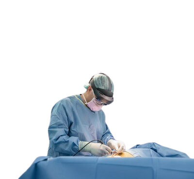

Device class
syncAR Spine is an XR software platform that combines Virtual Reality and Augmented Reality technologies. This combined technology is used across different stages of the surgical process, allowing surgeons to have immersive and interactive surgical planning and guidance.
My take: This device combines VR and AR in one platform, each used for a different purpose. Virtual Reality is used during the preoperative process, where surgeons plan and map the patient's entire spine structure, giving them a full scope of review and observation beforehand. The Augmented Reality side is used once the actual surgery begins: the surgeon wears the AR headset, and SyncAR shows them the previously prepared spine surgery plan. It combines the purposes of both XR classes in an efficient and elegant way, giving surgeons more options and greater control during surgery.
Input modality
A VR headset lets the surgeon interact with the preoperative plan immersively, viewing the 3D spine model stereoscopically while placing guidance objects such as directional markers and virtual screws. During surgery, the surgeon wears an AR headset — most commonly a Microsoft HoloLens 2, with earlier versions of the platform also supporting Magic Leap 1 — which functions purely as a heads-up display, projecting the live 3D model, navigation tracker, and guidance cues into the surgeon's field of view without requiring any direct manual interaction.
My take: The input modalities for each XR type are distinct and serve specific purposes. The VR headset allows for immersive interaction with the preoperative plan, while the AR headset provides a hands-free, heads-up display during surgery which allows the surgeons to focus on the surgery and follow the guidance that has been projected.
Artificial intelligence
The next-generation platform adds AI-driven vertebra segmentation, Advanced Decompression Planning (ADP) to pre-map bone resections, and Segmental Fusion, which keeps 3D models aligned with intraoperative CT even as the patient's position changes.
My take: The use of AI within the SyncAR Spine Next Generation platform is a mature and genuinely purpose-fit application of AI. Most AI in today's platforms is just an extra marketing gimmick. In SyncAR Spine's case, the AI model truly functions as a surgical assistant that simplifies the spine surgery procedure — from the initial vertebra segmentation process to the tracking and memory method that helps the surgeon keep track of which parts have already been processed, allowing the operation to proceed sequentially while reducing the risk of unnecessary, repeated processing.
Impact
The integration of XR in medical applications like syncAR Spine Next Generation shows great potential for improving accuracy and efficiency in surgical procedures. With the ability to map anatomical structures in real time and provide accurate guidance, this technology can help surgeons make better decisions and reduce the risk of complications during surgery.